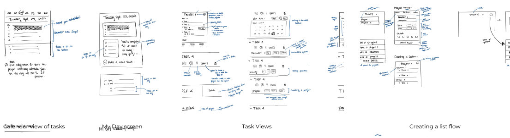
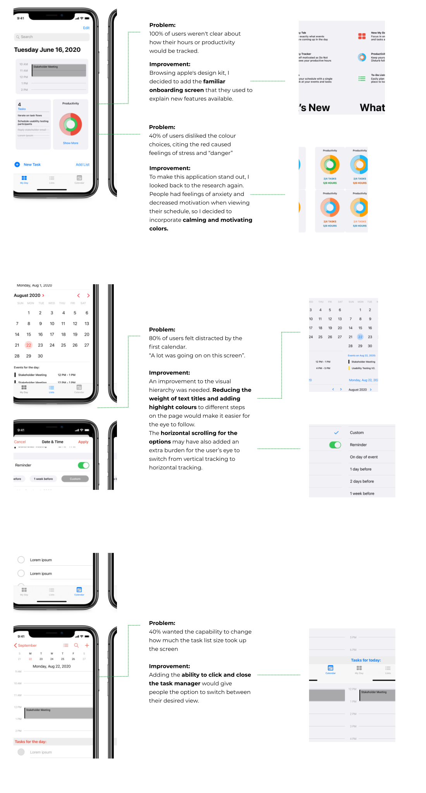

01. Overview
Background
Apple’s native Calendar app was pre-installed in the 40.8 million iPhones sold in the 3rd quarater of 2019. For many users, this is often the main app they use so their information is connected across their Apple devices.
Details
Role: UX/UI Designer
Timeline: 4 weeks
Tools Used: Figma
Skills: UX Research, UX/UI Design
Design Opportunity
Currently, the Calendar and Reminders app are two separate applications on the iOS system. Despite having different task flows, they ultimately share the same goal: reminding the user of an upcoming item. Can the Calendar and Reminders apps be combined for easier user convenience?
Design Solution
It became apparent that there was a real need for task management integration in the Calendar application. The new features motivate people to stay on top of their schedule in an organized and structured format.


02. Research
Understanding the needs
This project stemmed from my own frustrations of using the application. However, my own experiences weren't enough to warrant a new design. I wanted to know if my frustrations were shared by others, and who I would be designing for.
User Interviews
- People need a central location to view their upcoming due dates and events because it’s more convenient and easier to plan their schedule.
- Users need to stay motivated and on track because they need to complete their tasks by the due date.
- Both calendar and list views are necessary because people like to easily scan the due dates in a list view but sometimes need their calendar to plan tasks around their pre-scheduled events.
- People use a variety of features to manage their tasks, with due dates being the first.
Based on the different methods that people use to organize their tasks, I created two personas. They were used as a reference point to make sure that the new features captured both their needs.

What did the competitors do?
I looked to other popular applications that people used or mentioned in the interviews. By doing a feature comparison and analysis of their task flows, I got a general idea of how people expected the application to be laid out.
03. Ideating
How to reinvent the wheel
Adding a new feature to the calendar application meant really pushing the boundaries of Apple's current designs. I spent several sessions brainstorming ideas from the research findings, with the first session not worrying about feasibility.

Following IDEO's guidelines, subsequent sessions were spent finding common themes amongst the ideas and further conceptualizing. The final features I decided on were:
04. Design
Wireframes
Staying true to Apple's brand
Since I was adding a feature to Apple's native application, it was important that I stayed within Apple's visual branding designs. I used their material design kit to create the following wireframes, and used the Figma prototypeto receive feedback from potential users. I decided on their signature shade of blue to use the highlight color throughout the app. Given that the nature of the application can easily cause stress or anxiety when viewing a busy day, I hoped that the blue would provide feelings of ease and calmness.

05. Usability Testing
With the personas' goals in mind, the usability testing focused assessing the core functionalities of the design:
- providing a one-stop-shop experience for people to plan their schedule
- offering a basic structure for people with different management methods
- motivating users to stay on track with their day
I conducted a remote usability testing, starting with concept usability questions to collect participant reactions to the My Day and improved calendar features. I followed this up with task-based questions to assess the flow for creating and editing lists and tasks.
Before starting the session, I asked each participant to rate their level of experience with using task management applications on a scale of 1 to 3, with 3 being "expert". Participants who rated themselves 1 (no experience at all) were able to complete all the tasks, but were confused at the relevance of certain features such as sections or tags. This reinforced the need for a clear onboarding process for new users to know what functionalities are available to them. I also re-examined whether some features were actually necessary for the final product.
Based on the interviews, I created an affinity map and categorized the user feedback based on the features that were tested.
What needed improvement
Apple's accessibility problem
When I was following Apple's fitness application UI, I noticed that the brighter colors chosen were not accessible against their classic white background. This served to be a problem when looking at their Health application, where the activity text was not accessible.
Given the scope of the project, I decided to follow their current UI so the feature looked like it would belong within the application. However, it should be noted that the colors may need to be iterated in the future to be accessible to all potential users.
06. Final Prototype
In addition to the above, I made further iterations to the prototype. The final is below.
07. Learnings
- Perseverance when things get tough
- >There's a fine line between wanting to reinvent the wheel every time, and just restructuring the wheel. I came face to face with the power of creative brainstorming sessions, and it provided structure for the following design decisions. It was great to focus only on coming up with ideas, and not worrying about feasibility or technical issues. I learned that you can indeed find a diamond in the rough, or frankenstein different elements together to make that diamond. It taught me perseverance, and to always push through at least the first five (hardest) minutes of the session. Once that brain is warmed up, the creative juices will flow.
- Always double check
- Us juniors (maybe just me) often look up to current designers as a role model, someone who can do no wrong. This project taught me more than just empathizing with others. It also taught me to empathize and humanize designers at the big companies. Designers at big companies are human too, and everybody makes mistakes. From this experience, I learned that, as a fellow designer following an existing visual UI, to never just blindly follow. By adhering to my own codes and double checking the details of my work, I discovered the accessibility issue. I hope to one day be a part of making that iteration!